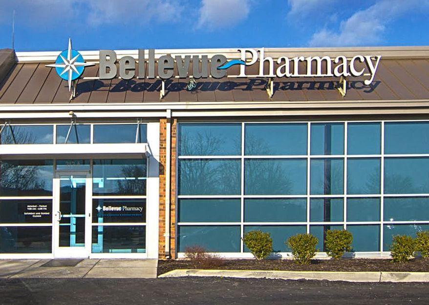
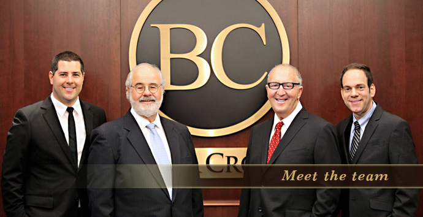

Pharmacy
Walgreens
I began my first full-time position as a pharmacy technician at Walgreens while I was still in high school, planning on going to pharmacy school. I continued to work there throughout and after college, spending a total of 8 years as a pharmacy technician.

Dierbergs
After leaving Walgreens, I began working as a senior pharmacy technician at Dierbergs Pharmacy. I worked between multiple locations for two years until leaving for a position with benefits at a compounding pharmacy.
Bellevue
I began working as a data entry technician at Bellevue Coumpounding Pharmacy in 2013. After reaching my full potential (and breaking a company record for scripts entered), I was moved to case management, where I dealt one-on-one with the patients using our products. After almost 3 years of work there, a European company bought the pharmacy out and liquidated all assets, essentially laying off all employees. It was then that I decided it was time for a change in career and began looking outside the pharmaceutical field.

Legal
Brown & Crouppen
Due to my experience in case management and data entry, I was able to get a job at a local law firm, Brown & Crouppen, P.C. I took a position in their business development department, managing a network of co-counsel attorneys both in and out of state on all open cases within the network. I was here for 2 years before moving on to another position with a start-up firm.

The Bruning Law Firm
In November of 2017, I accepted a position at The Bruning Law Firm, a smaller start-up firm in the area, as their Business Development and Marketing Manager. It was here that I was able gain experience in digital marketing and working on the back-end of software programs (without coding knowledge).